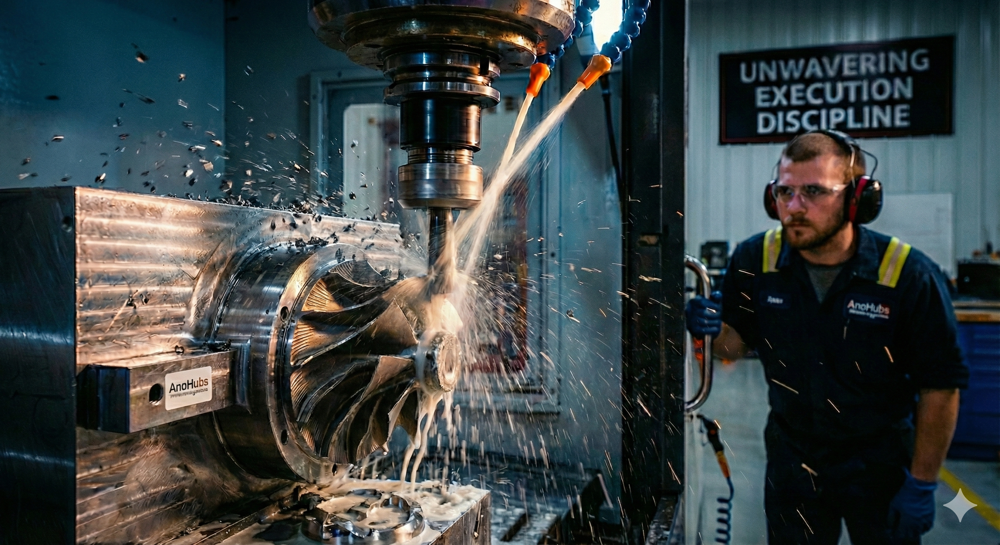

1. The PSH Imperative: No Room for "Good Enough"
The industry is rushing toward Pumped Storage Hydropower (PSH) as the battery of the future. Projects like Illvatn and Snowy 2.0 are engineering marvels. However, PSH operates under brutal conditions. Unlike traditional run-of-river plants, PSH units endure extreme load cycles, switching between pump and turbine modes multiple times a day.
In this environment, the tolerance for error is zero. A misalignment of 0.1 mm in a standard turbine might cause vibration; in a high-cycle PSH unit, it is a guaranteed catastrophic failure. There is no place for "good enough" when physics is pushed to the limit.
2. The AI Paradox: Digitalization Requires Integrity
We are seeing incredible advancements in software, with platforms like Volue offering smart optimization. But here lies the AI Paradox: Software optimizes based on the data it receives.
If a smart sensor is mounted on a poorly aligned bearing, the AI will optimize... a mistake. Digitalization without physical integrity is just a faster route to a breakdown.
The world is accelerating into AI at a pace that is incredibly hard to keep up with. When the industry moves this fast, the temptation to cut corners on the 'basics' grows. But we cannot build a digital future on a compromised physical past.
3. The Hidden Cost of "Savings" (The Liberia Lesson)
The recent news regarding cost overruns in Liberia is not an isolated incident; it is a symptom of the "Low Bid" virus. It proves a fundamental truth of our industry: initial savings on execution almost always transmute into final losses on operation.
FINANCIAL FORENSIC MODEL: THE LOW BID TRAP
DISCIPLINED EXECUTION
Higher Initial Cost,
Minimal Risk
LOW BID STRATEGY
Small Saving,
Huge Failure Cost
The New Mandate for Leadership
To survive the speed of this new Hydro-Boom, we must ensure our foundation is absolutely flawless. We don't just need smarter algorithms; we need stronger discipline on the ground to support them.
Resist the Rush
Do not let digital speed dictate physical assembly times. Steel does not care about your software sprint.
Invest in Basics
For every dollar spent on AI, spend a dollar ensuring the mechanical integrity is perfect.
Value Craftsmanship
The technician who aligns the shaft enables the AI. Without them, the data is worthless noise.
Conclusion
As we celebrate new contracts and digital breakthroughs, remember that success is not measured at the signing ceremony. It is measured twenty years later, in the quiet, reliable hum of a machine built with Unwavering Execution Discipline.
Anchor Your Investment
Are you building a digital future on a physical flaw? Let's audit your execution strategy before the concrete sets.
VERIFY EXECUTION QUALITY